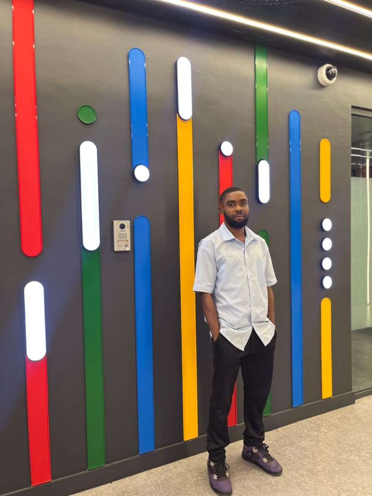

Bright Anibra | WDD 130.

My name is Bright Anibra from Accra, Ghana. I enjoy spending my free time playing football and exploring technology. When I play games, I mostly enjoy football games like EA FC, and adventure games where I can explore. I love learning how computers work, and that curiosity is what brought me into web development. I am currently studying at BYU-Pathway Worldwide to build my skills for a future career in IT and web development.